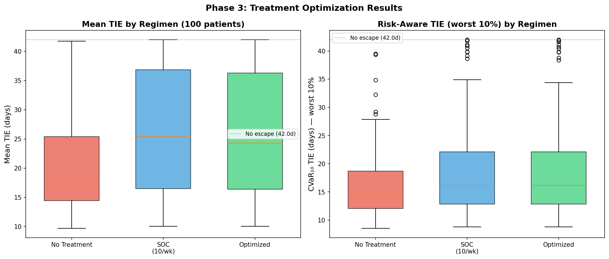
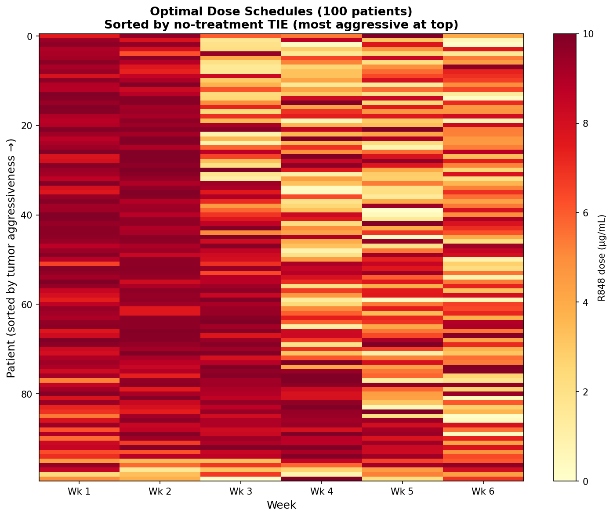
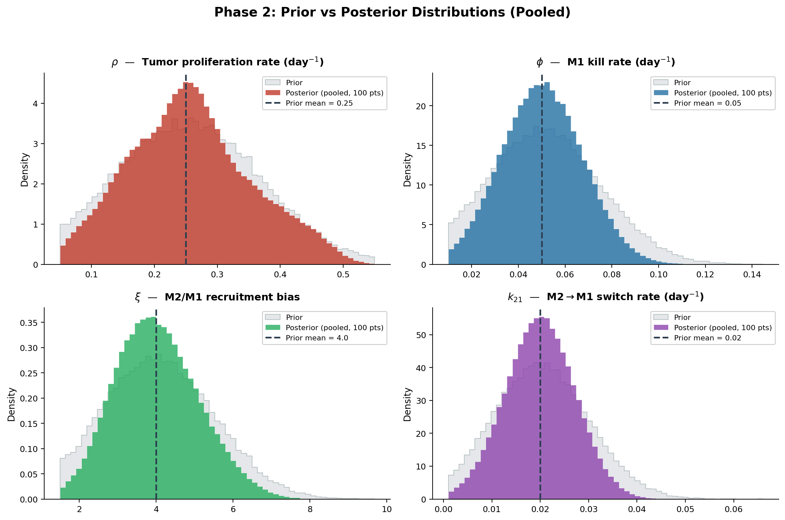
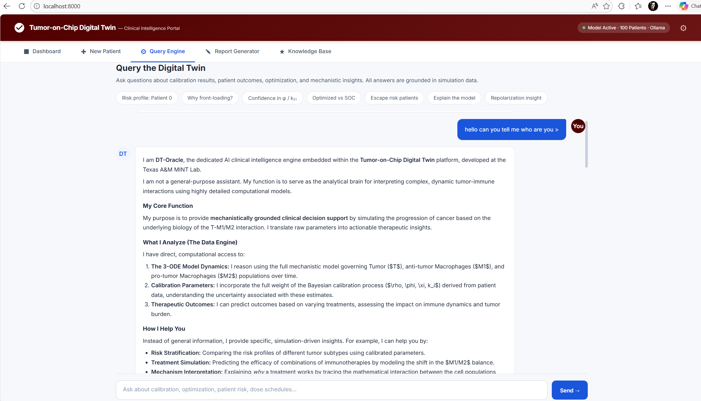

Digital Twins · Bayesian ML · Optimization
A digital twin that prioritizes experiments when every run costs weeks.
Calibrates a 3-ODE tumor–macrophage model from 6 data points per case via MCMC, then screens immunotherapy schedules under CVaR0.10 risk — matching standard-of-care efficacy at ~31% lower drug exposure across 100 virtual patients.
- PyMC / DEMetropolisZ
- SciPy solve_ivp
- CVaR optimization
- Ollama + Gemma
- ArviZ
- Dose reduction
- ~31%
- Virtual cases
- 100 · 0 failures
- Posterior coverage
- 95% (SOC TIE)
- Data per case
- 6 observations
In Preparation

Why it matters
Tumor-on-chip platforms reproduce the tumor microenvironment in microfluidic geometry, but they are slow and expensive to run and yield endpoint-biased, sparse data — a handful of time-points per chip. Empirical R848 schedule discovery is a combinatorial dead-end: even a modest 5-dose × 4-week grid is ~625 candidates.
The decision needed is not which schedule is best on average, but which schedule is safe for the patients who respond worst. A computational layer has to calibrate from sparse observations, propagate uncertainty into the objective, and rank schedules by their worst-case outcome — not their mean.
How it works
- Mechanistic backbone. 3-ODE tumor–macrophage model with 7 fixed and
4 uncertainparameters (ρ, φ, ξ, k21) under truncated-normal priors from cited biology. - Virtual cohort.
100 virtual casessampled from priors; SciPysolve_ivpRK45 forward simulation, 0/100 solver failures across phases. - MCMC calibration.
DEMetropolisZsampler, 4 chains × 8,000 draws per case (16,000 samples total). Max R̂ ≤ 1.01, mean ESS ~1,000 — clean diagnostics. - Risk-aware optimization. Maximize
CVaR0.10[TIE(θ, u)]over weekly dose uk ∈ [0, 10] µg/mL, total budget ≤ 60 µg/mL. - LLM-augmented portal. Local
Ollama + Gemmastack for cohort dashboard, new-case pipeline, structured case reports, and grounded Q&A. Fully on-device.

Macrophage repolarization flux
F(t) = u(t) · η · M₂(t)
What we found




So what. Risk-aware decision support for any domain where each experiment is a serious commitment of time, money, or samples — catalyst tuning, electrochemical screening, alloy thermal cycles. The deliverable is not a point prediction but a defensible ranking under posterior uncertainty.
Paper & resources
Manuscript
In preparation · 2026
Predictive DT framework
Kapteyn, Pretorius & Willcox — Nat. Comp. Sci. (2021)
Tumor–macrophage ODE basis
Mahlbacher et al. — J. ImmunoTherapy Cancer (2018)
Author
Prashant Dhakal
BibTeX · in preparation
@unpublished{dhakal2026bdt,
title = {A Bayesian Digital Twin for Risk-Aware Schedule Prioritization under Sparse Tumor-on-Chip Observations},
author = {Dhakal, Prashant and Wang, Shiren},
year = {2026}, note = {Manuscript in preparation; PhD dissertation Topic~2}
}
- Skills
- Bayesian inference / MCMC
- PyMC / DEMetropolisZ
- Mechanistic ODE modeling
- SciPy solve_ivp
- HDI / ESS / R̂ / coverage
- CVaR optimization
- Identifiability analysis
- Prior elicitation
- Posterior predictive checks
- Ollama / Gemma
- Local RAG & portal dev
- ArviZ / pandas / NumPy